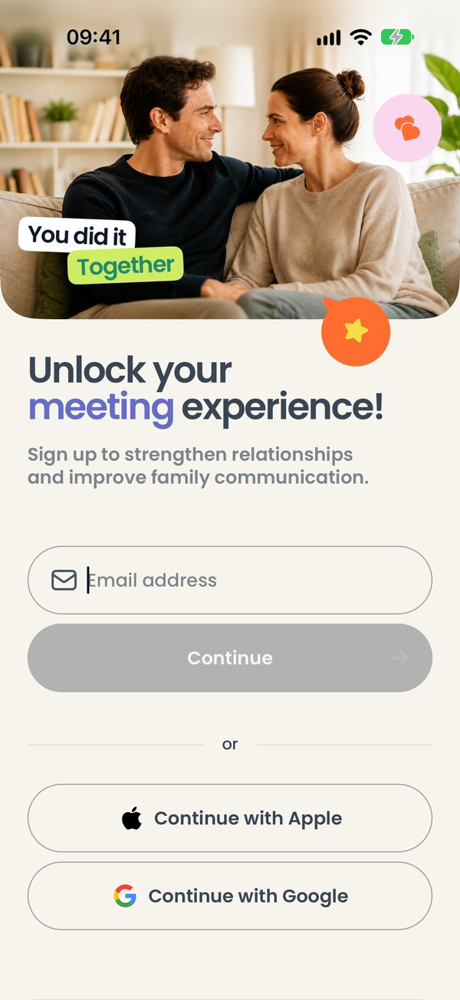

01
Экран входа
Что на экране
Первое, что человек видит после заставки. Сверху фотография пары, под ней заголовок Unlock your meeting experience! и строка о том, зачем приложение.
Ниже поле Email address и кнопка Continue. Пока поле пустое, кнопка серая и не нажимается. Под словом «or» — две кнопки: Continue with Apple и Continue with Google.
Что можно сделать
- Ввести почту и нажать Continue — на почту придёт письмо с шестизначным кодом.
- Нажать Continue with Google — iPhone спросит разрешения открыть страницу Google, и там можно выбрать аккаунт.
- Нажать Continue with Apple — вход через Apple ID (в тестовой сборке не работает, см. ниже).
На iPhone. Кнопки Apple в Android-версии нет. На iPhone она нужна: App Store не пропускает приложения, где есть вход через Google, но нет входа через Apple.
Обратите внимание. В сборке для симулятора вход через Apple не работает: для него нужен платный аккаунт разработчика Apple. После нажатия приложение попросит войти по коду. Пользуйтесь почтой или Google.
Как это работает. Если на этом телефоне уже входили, в поле сразу подставлен прошлый адрес — его можно стереть.